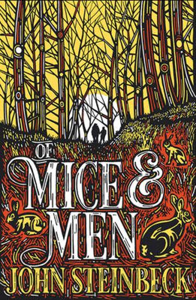

|
THE IMPERFECTIONS OF MEMORY1. ‘Life is so beautiful that death has fallen in love with it - a jealous, possessive love that grabs at what it can.’
and sometimes stories are so beautiful that souls have fallen in a love with them - a tender, quiet love that nurtures what it can.
this is one of those stories. |
 |
TO KILL A MOCKING BIRD1.Why is it when I pick up To Kill A Mockingbird , I am instantly visited by a sensory memory: I’m walking home, leaves litter the ground, crunching under my feet. I smell the smoke of fireplaces and think about hot cider and the wind catches and my breath is taken from me and I bundle my coat tighter against me and lift my head to the sky, no clouds, just a stunning blue that hurts my eyes, another deep breath and I have this feeling that all is okay. 2.Gosh, this is one of my new all time favorite books! It's just a shame that I will never be able to fully express how and why it affected me as much as it did. |
 |
THE HUNGER GAMES1.I LOVE THIS BOOK! I've said to a few people that if I wasn't married, I'd have to marry this book:) . THE HUNGER GAMES is a fantastic, breathless and somewhat brutal read that once you start you simply can’t put down again. Initially I had no idea what this book was about or what to expect in terms of YA writing, it had just been recommended to me by so many people and had such a buzz surrounding it that I had to find out for myself why. 2.Loved! It was a very fast paced book which I love ... I couldn't put it down. I've only seen the first movie before so I am excited to read the rest of the series without knowing the endings. |
 |
THE BOOK THIEF1.It makes me feel wrong inside when everyone else loves a book that I find to be underwhelming... I mean, what's wrong with me?? Did I not get it?? Obviously it must be a lack of intelligence or something because everyone seems to rate this 5 stars. 2.The Book Thief was published as Young Adult novel. Don’t you believe it. This is a wonderful novel, appropriate for adults of young, middle and advanced years. My wife was shedding copious tears as she finished reading the book, and insisted that I read it immediately. How could I not? I was prepared for a moving read and was not disappointed. 3.I have no words. never in my life have i sobbed so hard at a book. i had to put my knitting down, then i had to stop the audio book because i was crying too hard. |
ROMEO AND JULIET1.The people who dislike this play are the ones who view common sense over being rational, and prefer to view the world in a structured way. One of the main arguments that come across is the 'meeting, falling in love, and dying all in a weekend when Juliet is but 13'. We all must die in the end, so wouldn't you want to in the name of love than of an awful disease? 2.It is always so satisfying to read a book you've heard so much about throughout your life. You should have seen how excited I got when Juliet started saying "Romeo, o Romeo"! 3.XThe first time I read Romeo and Juliet (my freshman year of high school), I hated it. I had always heard it built up as a great love story, a great romance- and I didn't see it at all. |
|
HARRY POTTER1.I hadn't read this book in so long... it's been great to reread it and notice all the details I had forgotten! 2.Gosh, I wish this series would go on forever! I've fallen in love with the Wizarding World and all the amazing characters so hard! When I first started this series I didn't expect to be so attached and I didn't except for this series to pull on my heart as much as it did! I go through so many emotions in this series, it can break my heart one chapter then fill it with love and joy in the next, it's amazing. |
|
 |
THE KITE RUNNER1.Finished this book about a month ago but it's taken me this long to write a review about it because I have such mixed feelings about it. It was a deeply affecting novel, but mostly not in a good way. I really wanted to like it, but the more I think about what I didn't like about the book, the more it bothers me. 2.I’m going to be honest with you. To read this book was a constant struggle, not because I didn’t like the writing style, not because it was bad and not because it was boring. No, if anything “The Kite Runner” was so hard to read because it was so exceptionally painful. 3.This book made me so sad! I felt helpless and angry and there were times I actually was more than just tempted to stop reading. |
 |
THE LORD OF THE RINGS1.There’s too much to talk about and I love it far too much to articulate my thoughts in a normal way. So instead I’ve picked one element of each book that I liked the most (taken from my list of ten on each review) and added them here. It’s the best I can do, though I know many goodreads users share my difficulty when reviewing this book. 2.This classic that so many have loved over the years, many having read it as young girls, is somehow one that I never read until now. It’s a lovely story, and I wonder how I would have felt about it, had I read it when I was younger. Like so many readers, Jo, the lover of books, the writer, is my favorite, a woman before her time, exhibiting independence and a desire for more in her life. |
19841.This book is far from perfect. Its characters lack depth, its rhetoric is sometimes didactic, its plot (well, half of it anyway) was lifted from Zumyatin’s We, and the lengthy Goldstein treatise shoved into the middle is a flaw which alters the structure of the novel like a scar disfigures a face. 2.1984 is not a particularly good novel, but it is a very good essay. On the novel front, the characters are bland and you only care about them because of the awful things they live through. As a novel all the political exposition is heavyhanded, and the message completely overrides any sense of storytelling. |
|
WUTHERING HEIGHTS1.I understand why many people hate this book. Catherine and Heathcliff are monstrous. Monstrous. You won't like them because they are unlikable. They are irrational, self-absorbed, malicious and pretty much any negative quality you can think a person is capable of possessing without imploding. 2.The story itself is unique & very original, a precursor for many Victorian thrillers & haunted house spectaculars. But there was no engine in my brain to ease down the process; reading this is like reading something that is altogether mandatory. I guess its a classic because enough people have read it to distinguish it from better books. |
|
PRIDE AND PERJUDICE1.Confession...this book gave me an earth-shattering Janeaustegasm and I am feeling a bit spent and vulnerable at the moment, so please bear with me. You see, I decided I wanted to get more literated by reading the "classicals" in between my steady flow of science fiction, mystery and horror. The question was where to begin. 2."Pride and Prejudice" by Jane Austen started off annoying me and ended up enchanting me. Up until about page one hundred I found this book vexing, frivolous and down right tedious. I now count myself as a convert to the Austen cult. 3.This book is quite possibly the most insipid novel I have ever read in my life. |
|
 |
THE GIVER1This book is perhaps the best refutation that I have seen in some time of a common philosophy of pain that is sometimes found in the popular media and in some versions of Buddhism. 2.The Giver is a story that sticks with many of us as it is often a part of required reading in school. I consider it one of the most impactful academic reads from my adolescence as it was one of the first stories to feel targeted towards me. 3.This book is quite possibly the most insipid novel I have ever read in my life. |
|  | OF MICE AND MEN1.I've taught this book to my 6th graders nine years in a row. Once I realized that the book is actually a mystery, and not the bland sci-fi adventure it seemed at first skim, I loved it more and more each time. Nine years, two classes most years... 17 TIMES 2. I know that this is a reread for me, but I never had Of Mice and Men marked as read in Goodreads. I am pretty sure it was required reading in high school and I know I enjoyed it the first time around. And, as luck would have it, I enjoyed it this time as well. 3.I hated this book.Steinbeck is crap. Children should not be forced to read it |
THE ODYSSEY1.It was this novel that ignited my love for Greek and Roman mythology and antiquity - leading me to choose a degree in Classical Civilisations. I always look back on The Odyssey with fondness - I love all the monsters he faces and the gods who involve themselves with Odysseus' trials as he makes his way home after the Trojan War. 2. It's impossible not to smile when you start reading such a classic and, after only the first few pages, you realize and completely understand why it's regarded as one of the most important works in literature. 3.It's funny how many people feel intimidated by this book. Sure, it's thousands of years old, and certainly Greek culture has some peculiarities, but the book is remarkably, sometimes surprisingly modern, and most translations show the straightforward simplicity of the story. |
|
 |
THE OUTSIDERS1.I can see why this has stood the test of time. The story is easy to get into and keeps your attention throughout. It seems like any person, young or old, rich or poor, popular or outcast could empathize or sympathize the themes. Finally, the key climax points are done very well and hit you right in the feels! 2.I'm a little horrified at myself for not having this book up before now. We had a discussion about it in class today, and I had to write this as soon it was over. I wish there were more stars to give The Outsiders, but five will have to do. 3.I think I’m falling in love all over again. This will always be my favorite book and I am see myself reading this another 4 times during this year. |
 |
A TALE OF TWO CITIES1.It rarely happens that a quote from a book haunts me but this one, well, this one does. I finished “A Tale of Two Cities” about two weeks ago, yet I’m still not over the ending. But how could I? After all, this is one of those rare books that keep you thinking even after you finished the last page and already closed the cover of the book. 2.Instead of trying out new plots and ideas, Dickens keeps focusing on his main premises, recycling himself a bit and especially losing control over the inner logic, coherency, and credibility, not ever to talk about suspension of disbelief, because this thing feels so constructed. 3.A Tale of Two Cities is one of the most famous books, where Dickens shows humans at their best and their worst. But Dickens' descriptive writing was difficult for me. |
 |
ANNA KANERINA1.In the beginning, reading Anna Karenin can feel a little like visiting Paris for the first time. You’ve heard a lot about the place before you go. Much of what you see from the bus you recognize from pictures and movies and books. You can’t help but think of the great writers and artists who have been here before you. You expect to like it. You want to like it. But you don’t want to feel like you have to like it. 2.I was hooked on Anna Karenina from the opening section when I realized that Tolstoy was brilliantly portraying characters' thoughts and motivations in all of their contradictory, complex truth. However, Tolstoy's skill is not just in characterization--though he is the master of that art. His prose invokes such passion. |
THE OLD MAN AND THE SEA1."There isn't any symbolism. The sea is the sea. The old man is an old man. The boy is a boy and the fish is a fish. The sharks are all sharks no better and no worse. All the symbolism that people say is shit. What goes beyond is what you see beyond when you know." 2. Dec 26, 2019David Putnam rated it it was amazing Loved this book. One of my favorites. I really don't understand why this book doesn't have a higher overall rating. I like Hemingway and I think this is one of his better ones. I guess it's because it doesn't get in the way of itself like some of his other works. This one is straightforward, great descriptions in a man vs nature story. |
|
 |
THE POISONWOOD BIBLE1.I had a hard time choosing between 2 and 3 stars -- really, it should be 2.5. I thought the prose was quite lovely; Kingsolver has a nice voice. I enjoyed reading about a part of the world of which I have no experience. The description of the clash of cultures was well done. 2.I finished the last 300 pages in 2 days (which is very fast for me - English books). I felt every emotion under the sky with this book. I hated Nathan Price, I hated injustice, I hated my uselessness, I hated the fact that there are no good prospects for Africa in the future. As a Geographic major I strongly believe that the closer you are to the Equator, the longer it will remain an underdeveloped country. |